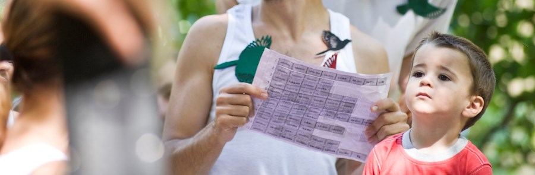
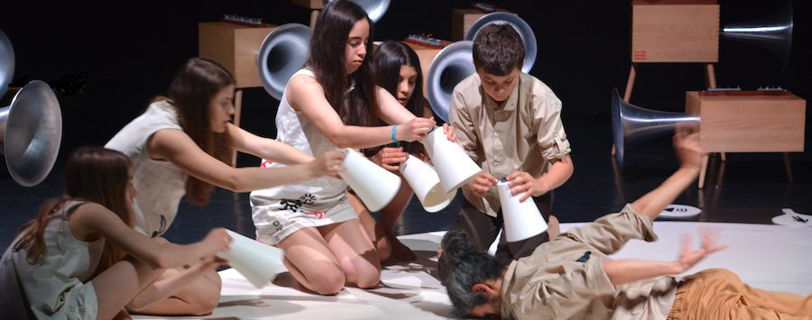
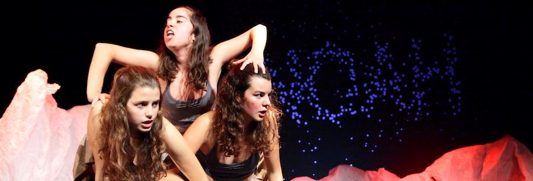
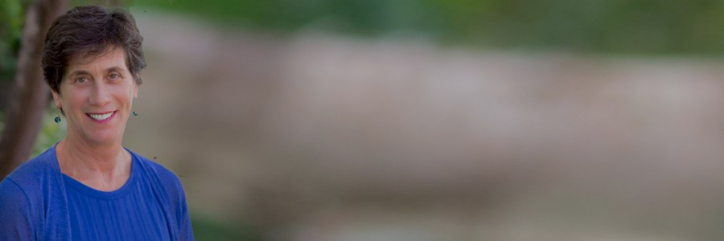
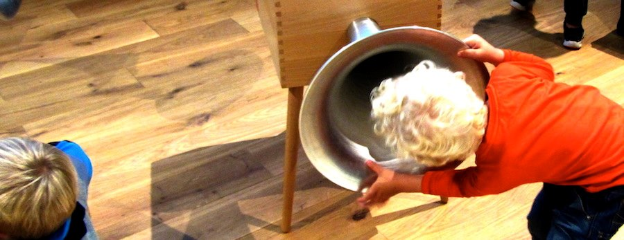

|
|

|

|
| Gostamos de partilhar as nossas ideias. Afinando Pessoas, Pássaros e Flores. |
|
| We enjoy sharing our ideas. Tuning People, Birds and Flowers. |
|
|
|  |
|
| “No
maravilhoso mês de Maio, quando todos os pássaros cantam” os delicados
sons de Babelim cintilarão na Primavera de Paris. Babelim é um
espectáculo para bebés feito por crianças e adolescentes. Nasceu no
ninho de Opus Tutti, ganhou asas e tem voado por Portugal, Dinamarca e
Finlãndia. Surgirá agora no Festival Chantiers d´Europe no Theatre de
la Ville-Espace Cardin. As Formações Transitivas do projecto GermInArte
chegarão a Angra do Heroísmo, Lisboa e Viseu. A CMT participará na
sessão Música, Um Eco na Serra nos Encontros com a Cultura da Covilhã. |
|
| “In
the wonderful month of May, when all the birds sing” the delicate sound
of Babelim will scintillate in the Spring of Paris. Babelim is a piece
for babies performed by children and adolescents. It was born in the
nest of Opus Tutti, grew wings and has been flying over Portugal,
Denmark and Finland. It will appear now at the Festival Chantiers
d´Europe at Theatre de la Ville-Espace Cardin. The Transitive Training
actions of the GermInArte project will reach Angra do Heroísmo, Lisbon
and Viseu. CMT will participate in the session Música, Um Eco na Serra
at the Encontros com a Cultura da Covilhã. |
|
|
|  |
|
| Em
Abril a primeira residência do Projecto Orizuro encheu de pássaros o
Laboratório de Música e Comunicação na Infância em Lisboa. Logo a
seguir deixámos alguns “orizurus” da CMT-Kids em Viana do Castelo, após
uma residência do projecto NOAH. Na conferência da RESEO em Berna
falámos sobre o projecto NOAH e a necessidade de despertar a
consciência colectiva para as questões ambientais. Nos Estados Unidos
apresentámos a performance-lecture “Tuning People, Birds and Flowers"
na Harvard School of Education e um conjunto de workshops para
educadores em escolas de Boston. Participámos no IETM Plenary Meeting
no Porto, levámos Formações Transitivas do projecto GermInArte a Torres
Vedras, Bragança e Lisboa e fizémos um estágio para formadores
GermInArte na Escola Superior de Educação de Coimbra. O Opus 7 floriu
em Loures. |
|
| In
April the first residence of the Orizuro Project filled the Laboratory
of Music and Communication in Childhood in Lisbon with birds. Soon
after we left some orizurus of the CMT-Kids in Viana do Castelo, after
a residence on the NOAH project. At the RESEO conference in Bern we
presented the NOAH project and talked about the need to raise awareness
for the environment. In the United States we presented the
performance-lecture "Tuning People, Birds and Flowers" at the Harvard
School of Education and a set of workshops for educators in Boston
schools. We participated in the IETM Plenary Meeting in Porto, we took
Transitive Trainings from the GermInArte project to Torres Vedras,
Bragança and Lisbon and we did an internship for GermInArte trainers at
the Coimbra Higher Education School. Opus 7 flourished in Loures. |
|
|
|  |
|
"(…)
A Arte pode ajudar a resolver problemas simples e complexos e de formas
que outras disciplinas não conseguem fazer (…). A educação artística
oferece um caminho para entrar no mundo de forma mais enérgica,
flexivel e confiante. Ao pensarmos nos novos caminhos que a educação
deve seguir devemos prestar especial atenção e cuidado ao papel que a
criatividade e a inovação podem e devem desempenhar."
Linda
Nathan, Directora Executiva do Center for Artistry and Scholarship,
professora na Harvard Graduate School of Education, autora de The
Hardest Questions Aren’t on the Test and When Grit Isn’t Enough.
|
|
"(…)
Art helps us solve problems both big and small, and in ways that other
disciplines cannot (…). Arts education offers a way to enter the world
more energetically, flexibly, and confidently. As we think about a new
path forward in education, may we invest more closely and carefully in
the role that creativity and true innovation can and should play."
Linda
Nathan, Executive Director of the Center for Artistry and Scholarship,
teacher at the Harvard Graduate School of Education, author of The
Hardest Questions Aren’t on the Test and When Grit Isn’t Enough.
|
|
|
|  |
|
| Babelim
é um termo inventado para designar a forma de comunicação que precedeu
a linguagem. Feita de sons, imagens, movimentos,
falado/cantado/dançado, pelas pedras, plantas, animais e humanos.
Perdeu-se com o tempo e com a pressa de nos tornarmos grandes. Mas os
bebés e as mães ainda o falam. |
|
| Babelim
is an invented term to denote the way we would communicate before there
was language. It is made of sounds, images, movements,
spoken/sung/danced through the stones, plants, animals and humans. It
was lost in time and in the rush to grow up. But babies and their
mothers still speak it.
|
| |
| |